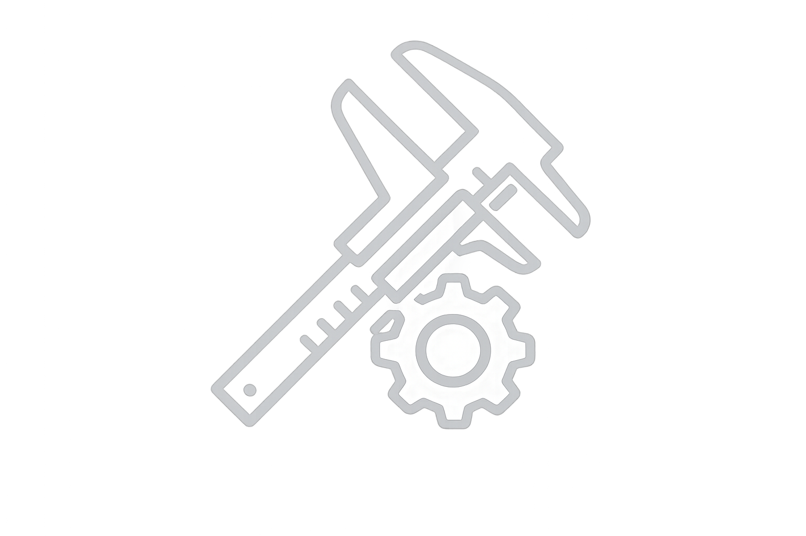

Painel de ferramentas da qualidade
Calcular bloco
calcular pino
analise de capabilidade
Calcular bloco
Realizar busca
Reiniciar cálculo

Aguardando cálculo...
Utilize a combinação sugerida para ajustar o relógio comparador.